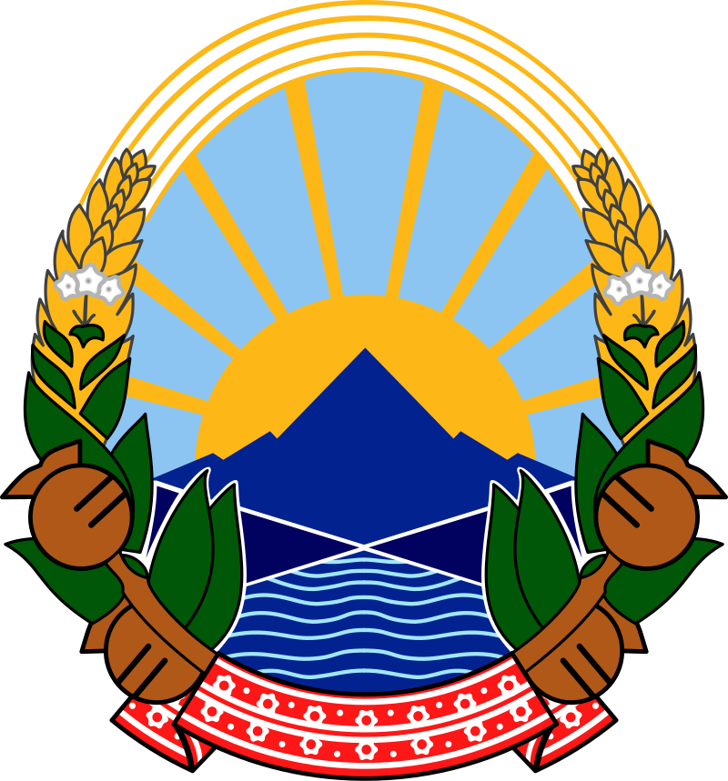
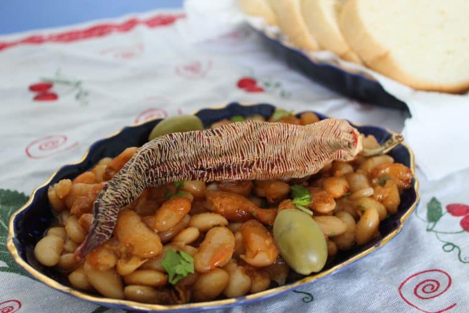

North Macedonia
Tavče Gravče


A national dish of North Macedonia, it's a standard meal on Fridays where most of the population adheres to Orthodox Christianity; thus, this meal contains no meat and works wells for vegans too! Instead of using meat, white kidney beans are backed on a Tava (or flat skillet) and mixed with other vegetables
Ingredients
- Beans, washed and cleaned: 4 cups
- Sunflower Oil: 5 tablespoons
- Dried Chili Peppers: 3
- Red Pepper (Paprika): 3 tablespoons
- Medium-sized Onions, sliced into quarters: 2
- Tomato Sauce: 2 cups
- Black Pepper: 1/2 tablespoon
- Cumin: 1 tablespoon
- Garlic Cloves: 3
- Bouillon Cubes: 3
- Bay Leaves: 5
- Parsley, chopped, for garnish
- Frsh Pepper, for garnish: 1
- Small Onion, slices into circles, for garnish: 1
Steps
- Pour the beans in a pot and soak them in water (about 2 inches above the beans). Let the beans soak for at least 2-3 hours.
- Drain the water out, pour a new set of water (about 2x the volume of the beans), and add a tablespoon of sunflower oil.
- Add four quartered onions, 3-4 dried chili peppers, 3 bouillon cubes, 5 bay leaves, and 1 tablespoon of red pepper into the water. Cook the beans over medium heat until soft, around 45-60 minutes if you previously soaked the beans or around 2 hours if you didn’t.
- Don’t forget to keep checking on the beans, stir often, and keep adding warm water as the water evaporates. Aim for stew-like consistency.
- (Optional) If you have the time, turn the fire off and let the beans soak in the mix for around an hour. This isn’t a must but it makes the beans a lot softer and tastier.
- Drain the beans and take out the leaves.
- Take out the Tava, soak it in sunflower oil and heat it up. Add some red pepper (paprika) to the sunflower oil and mix until the oil and paprika combine.
- Add finely chopped celery and smashed garlic cloves to the mix and preheat your oven to 190°C.
- Pour some tomato sauce and 1 tablespoon of salt to the beans, and mix. You should get a light red/ orange color.
- Take some of the water out and pour the beans in the Tava. You’ll want to leave just enough water to barely cover the beans. Bake for one hour.
- Add some fresh peppers (cut into half) and place them on top. Push them down so they grill up evenly. Increase the heat to 220 °C for 5 minutes.
- Add sliced onions, dried peppers, and chopped parsley on top as garnish. Let it cool off for 15 minutes before serving.
Source: Tavce Gravce Recipe- How to Prepare Macedonia’s National Dish?